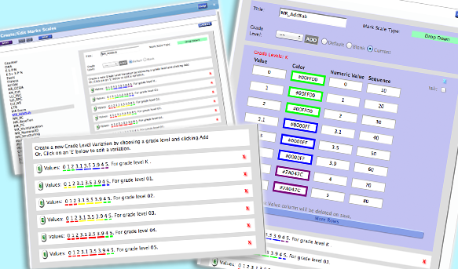

<div class='panelBlock'>
<div class='screenshot'>

<div class='caption' style='
height:70px;
padding-top:10px;'>

<div class='firstLine'>
			Each Mark Scale supports as many grade levels as needed.
</div>
<div class='subsequentLine'>
			As many values as you want. Plus, a numeric value for analytics.
</div>
<div class='subsequentLine'>
			A separate set of performance threshold color bands for every grade!
</div>
</div>

<div class='image'>

		
</div>

</div>